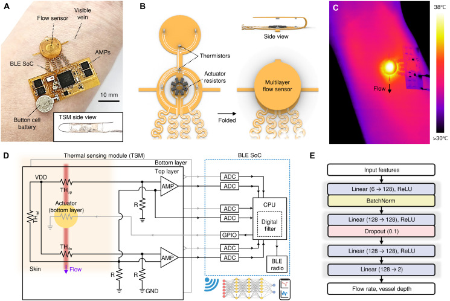
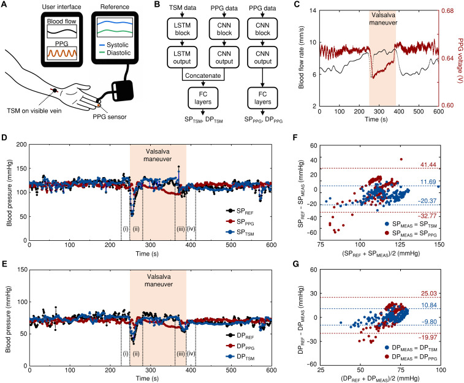

摘要解读
融合深度学习的多层热梯度传感平台用于实时血流监测
Deep learning–integrated multilayer thermal gradient sensing platform for real-time blood flow monitoring
解读更新 2026-10-18 21:34 · 依据公开摘要整理，未核验全文细节
皮下血管深浅不一，会干扰热学血流测量。这项研究将多层热传感与深度学习结合，同时估计血流与血管深度，为贴肤式连续心血管监测提供了值得关注的思路。
文章目录
测血流，也要面对血管深度的影响
血流监测有助于评估心血管健康、识别血管并发症，但便于持续使用的测量方式仍面临挑战。摘要指出，传统多普勒超声依赖体积较大的设备和专业操作；已有热传感方法则受到皮下血管深度差异的限制。本文关注的核心问题，是如何在测量血流时，同时识别血管深度这一影响因素。
用多层温度信息同时估计血流与深度
研究提出一种柔性电子平台，将多层热传感模块、无线系统与深度学习算法结合。位于不同层的热敏电阻，采集距离皮肤表面不同高度处的热梯度；算法处理这些多层热分布信息，实时提取血流与血管深度。其方法重点不是只读取单一位置的温度，而是利用空间分层的信息完成联合测量。
摘要明确列出的验证方式包括台架测试、有限元分析和人体佩戴试验。此外，研究还将热传感与光电容积描记法（PPG）结合，用于连续血压监测。摘要未交代网络训练配置和具体数据处理流程，因此这里不进一步展开算法细节。
从分层热场到无线联合测量

图解：多层热传感结构与深度相关热场。A、B比较不同埋深血管仿体上方的红外热像及吸热、散热示意；C展示腕部佩戴照片和侧视插图；D标明上下层、上游与下游热敏电阻相对中央热致动器及血管的位置；E展示传感器、支撑与黏附层的分层组装；F、G比较不同血管深度下上下感测层的有限元温度分布，平面坐标表示空间位置，色标表示温度。
原文图注与出处
Multilayer thermal sensing architecture for simultaneous blood flow and vessel depth monitoring. ( A and B ) IR thermal imaging of a 3.5-mm diameter thermal actuator positioned over blood vessel phantoms at depths of 1 mm (A) and 2 mm (B) from the skin surface, demonstrating depth-dependent absorption and dissipation patterns. Flow velocity maintains 1 mm/s with thermal power density of 5.89 mW/mm -2 . ( C ) Photograph of the multilayer thermal sensor over a wrist vein. Inset provides a side view. ( D ) Cross-sectional schematic illustrating the spatial arrangement of upstream (T top,up and T bot,up ) and downstream (T top,dn and T bot,dn ) thermistors in both top/bottom sensing layers relative to the central thermal actuator and blood vessel orientation. ( E ) Exploded-view illustration of the sensor architecture showing the layered assembly: top and bottom thermistor arrays, acrylic support structures maintaining 1.5-mm interlayer spacing, thermal actuator, and adhesives. ( F and G ) FEA results showing planar temperature distributions in top and bottom sensing layers for vessel depths of 1 mm (F) and 2 mm (G) with 1-mm/s flow rate. Temperature ranges from 25° to 37°C.
Sim Youngmin et al.
原文图页 · CC BY 4.0

图解：无线平台与深度学习处理链。A展示柔性模块、蓝牙低功耗通信部件及感测层侧视图；B展示柔性电路折叠形成多层传感器的结构；C以温度色标显示沿血流方向不对称传播的热场；D给出热传感模块的桥式测量、放大、模数转换与无线传输电路；E展示以各层上游、下游和参考热敏电阻信号为输入，输出血流与血管深度的神经网络。
原文图注与出处
Wireless blood flow sensing platform with deep learning integration. ( A ) Photograph of the flexible blood flow sensing module with BLE communication capabilities. The width, length, and thickness of the device are 27.8, 27.2, and 1.5 mm, respectively, excluding battery. Inset shows side view illustrating the 1.5-mm separation between sensing layers through acrylic support. ( B ) Schematic exploded view of the multilayer flow sensor showing the fPCB designed for folding configuration. ( C ) IR thermal image showing temperature gradients (30° to 38°C) and asymmetric heat propagation along blood flow direction. ( D ) Circuit and block diagram of the platform architecture comprising the TSM integrated with BLE SoC. The TSM consists of two-layered upstream (TH up ), downstream (TH dn ), and reference (TH ref ) thermistors with Wheatstone bridge configurations, differential amplifiers (AMPs), variable gain amplifiers, and analog-to-digital converters (ADCs). VDD, supply voltage; GND, ground. ( E ) Deep learning neural network architecture accepting six input features (upstream, downstream, reference thermistor inputs from each sensing layer) to generate two outputs: flow rate and vessel depth. The network uses linear layers with ReLU activation, batch normalization (BatchNorm), and 10% dropout regularization.
Sim Youngmin et al.
原文图页 · CC BY 4.0联合测量得到验证，血压融合显示应用价值
摘要报告，平台在所考察的相关血流和血管深度范围内实现了准确测量。与PPG结合后，连续血压监测的准确性相较常规方法有所提高，尤其体现在动态生理变化期间。不过，摘要没有给出误差数值及提升幅度，不能据此量化其优势。
个体化心血管监测、血流动力学事件早期识别和皮肤移植监测，是摘要提出的潜在用途。这些应用前景不等于均已完成验证，应与摘要实际报告的联合测量及血压监测结果分开理解。
热传感与PPG融合的血压比较


图解：连续血压监测的融合方案及比较。A展示腕部热传感模块、手指PPG传感器与参考血压设备的配置；B展示热传感与PPG分别经LSTM和CNN处理后融合的预测路径，以及仅使用PPG的比较路径；C以时间为横轴展示血流与PPG电压，并标出Valsalva动作阶段；D、E比较参考、仅PPG及融合预测的收缩压和舒张压时间序列；F、G为相应Bland–Altman图，横轴表示参考与测量血压的均值，纵轴表示两者差值，用于比较动作及过渡阶段的一致性。图注说明该部分数据来自单名受试者。
原文图注与出处
Continuous blood pressure monitoring through thermal sensing and PPG integration. ( A ) Experimental setup illustration showing the TSM positioned over a wrist vein, PPG sensor on the middle finger, and clinical-grade blood pressure monitor (Finapres NOVA) on the index finger for reference measurements. ( B ) Neural network architecture for blood pressure prediction featuring parallel pathways that independently process TSM and PPG data through LSTM and CNN components, respectively. After concatenation, fully connected (FC) layers generate real-time blood pressure estimates (SP TSM and DP TSM ). ( C ) Simultaneous measurements of blood flow rate (black line) and PPG sensor (red line) over 600 s. The participant performed a Valsalva maneuver for 140 s (highlighted regions) to induce rapid blood pressure changes. ( D and E ) Blood pressure predictions comparing reference values (black lines; SP REF and DP REF ) with PPG-only predictions (red; SP PPG and DP PPG ) and integrated TSM-PPG predictions (blue; SP TSM and DP TSM ) for systolic (D) and diastolic (E) pressures. ( F and G ) Bland-Altman plot for systolic (F) and diastolic (G) measurement (SP MEAS and DP MEAS ) agreement during Valsalva maneuver and transition phases (10 s before, 140 s during, and 30 s after). Data from the participant in (D) and (E) (one subject, 180 samples).
Sim Youngmin et al.
原文图页 · CC BY 4.0测得准的结论，仍需核对适用边界
仅凭摘要，无法判断总体受试者数量与构成、训练和测试数据的划分、跨个体泛化能力，以及完整的流速和深度验证范围；“常规方法”的具体比较设置也未展开。所附血压原图的图注限定了其中一致性分析的数据来自单名受试者，不能将该图直接视为人群层面的验证。这些是当前资料的判断边界，不代表论文未开展其他工作。
阅读启发：关注传感结构与模型如何配合
阅读启发：对关注智能监测与结构设计的读者，本文值得追问的是，多层布局究竟提供了哪些帮助区分血流与深度的信息，以及有限元分析如何参与解释这些信息。进一步阅读时，可重点核对结构选择依据、模型在不同个体间的适用性，以及动态血压比较的验证条件，而不宜仅凭使用深度学习就推断其具有普遍可靠性。
以上为本站阅读启发与建议，不是论文已验证的结论。